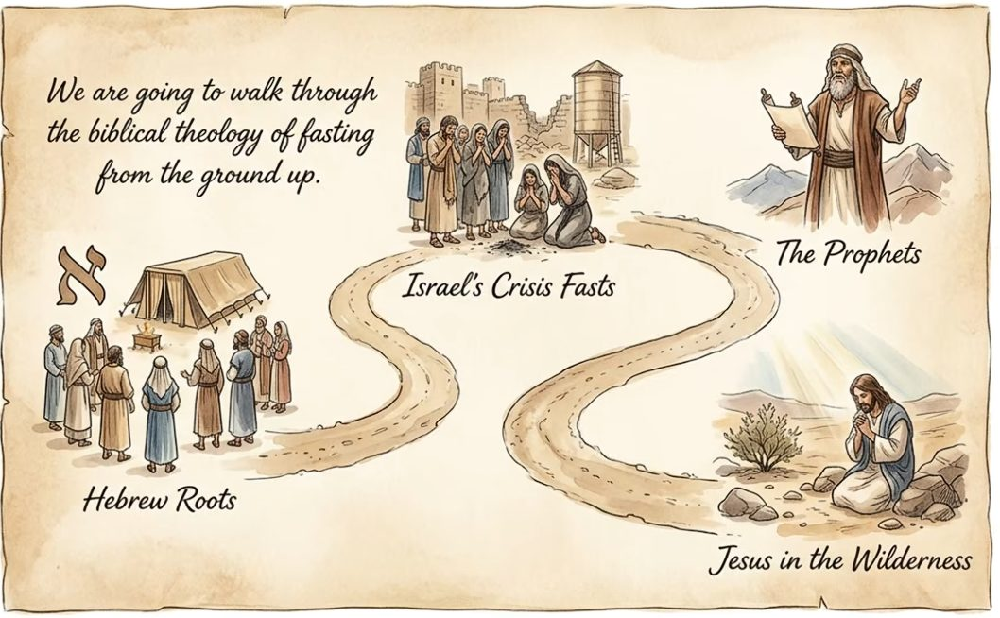
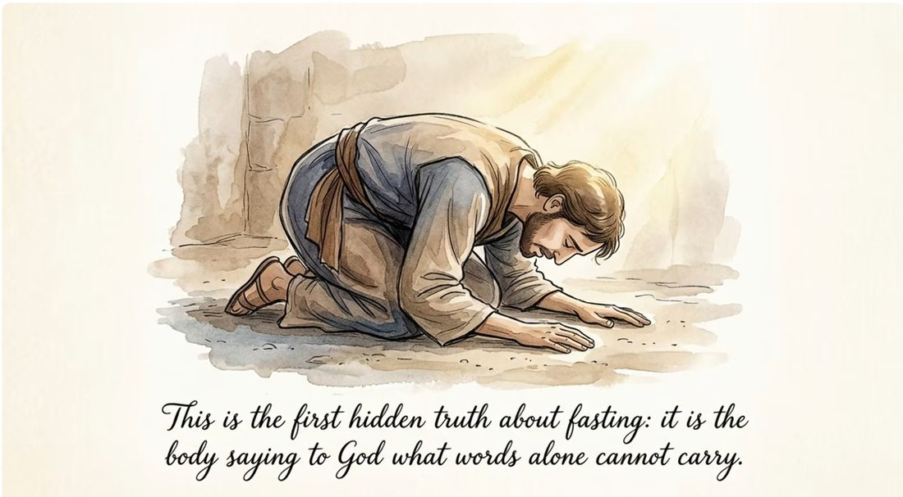
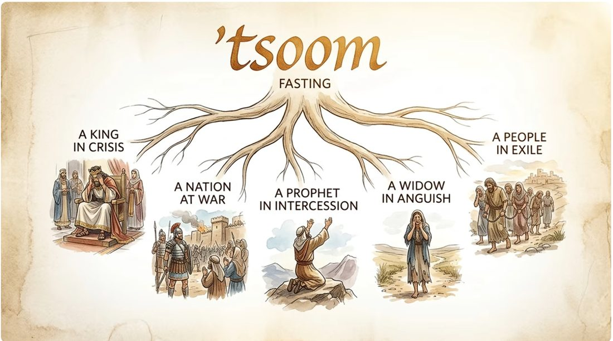

For years I fasted 2–3 times a year, mostly as a way to do a kind of cleanse of my soul. I wasn't trying to earn brownie points with God or bribe Him into answering a prayer. I wasn't fasting to be healthy or lose weight, and I wasn't fasting so I'd feel more sensitive to the many people in this world who are hungry right now and will go hungry tonight. I'd just sit all day with my Bible open, a notepad next to me, and worship music playing. It was always a genuinely good time, which is why I kept doing it.
Even so, a video I watched during my quiet time recently was a little convicting. There's more to fasting than I'd given it credit for — it isn't just a private discipline between me and God. It's meant to reshape how I treat the people around me while I'm doing it.

What the Hebrew word for fasting, tsoom, actually covers is broader than just skipping meals. It sits inside a whole cluster of practices — mourning, weeping, prayer, confession, tearing garments, sackcloth and ashes — that together form the body's way of saying to God what words alone can't carry.

That line stuck with me. My own fasting has almost always been the quiet, contemplative kind — a soul-cleanse in solitude. But Scripture's picture of fasting is often much louder and more communal than that: whole nations mourning together, whole households tearing their clothes, entire cities crying out. I'd been treating fasting as strictly personal. It's often meant to be corporate too.
Which brings me to the passage I don't want to skip past — Isaiah 58, which is God's own response to people who fasted faithfully and still couldn't understand why He wasn't impressed:
"'We have fasted before you!' they say. 'Why aren't you impressed? We have been very hard on ourselves, and you don't even notice it!' 'I will tell you why!' I respond. 'It's because you are fasting to please yourselves. Even while you fast, you keep oppressing your workers. What good is fasting when you keep on fighting and quarreling?'… 'No, this is the kind of fasting I want: Free those who are wrongly imprisoned; lighten the burden of those who work for you. Let the oppressed go free… Share your food with the hungry, and give shelter to the homeless.'" — Isaiah 58 (NLT), abridged

That's the convicting part. God isn't rebuking the fasting itself — He's rebuking the gap between what happens in the fast and what happens the rest of the day. It's entirely possible to be hard on yourself religiously and still be hard-hearted toward the people who work for you, or hard-hearted toward the hungry and the homeless. Isaiah 58 says real fasting doesn't stay in the room where you're doing it. It's supposed to walk out the door with you and change how you treat everyone you meet the rest of that day.
I don't think that undoes years of good, quiet fasting. But it does add a question I hadn't been asking: not just "did I meet with God today," but "did anyone else's burden get lighter because of it?"